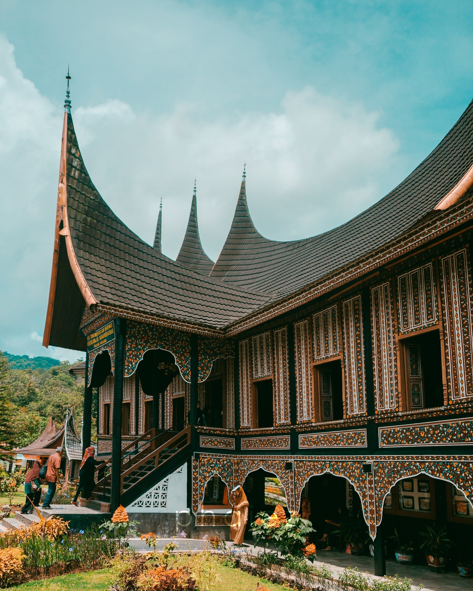
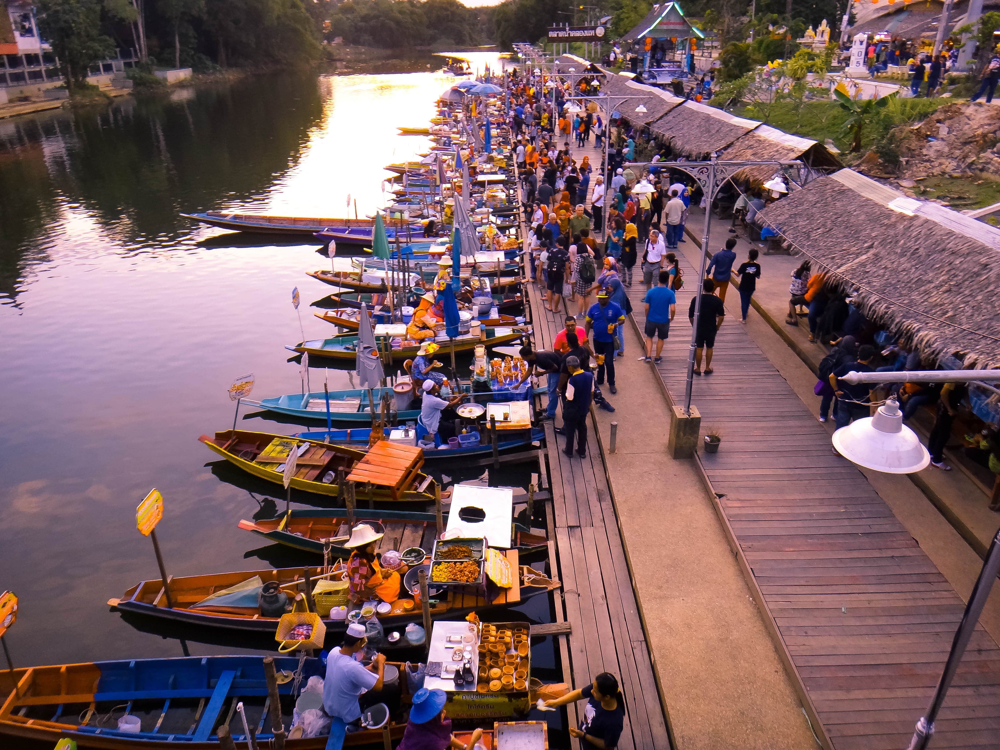
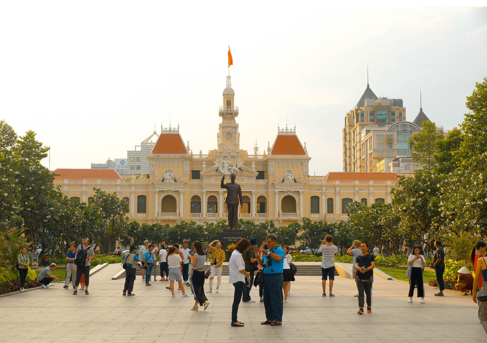
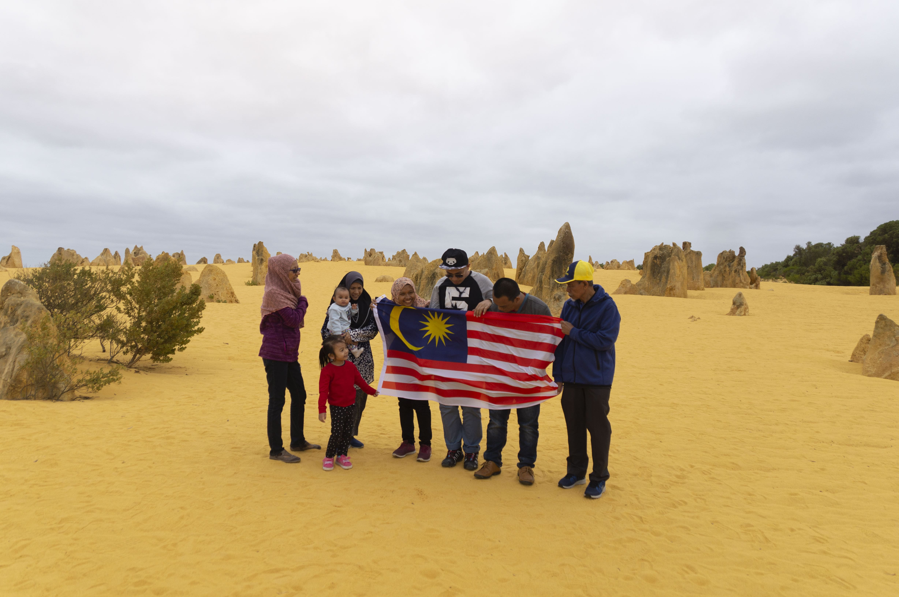

My Personal Website

|  | My family loves travelling and one of the places that we went is Padang, Indonesia. During our journey, we visited the once residency of one of the renowned authors in the Islamic history which is Hamka. We had to go through a road that is named ‘Lekuk 6’ as the place was an uphill and the road has six turns connecting the uphill and downhill road. Also, we learn a lot of their rich culture and the picture showed is their one of their intricate designs of houses from their rich culture. More pictures can be found here. | |
| Afterwards, also one of the destinations I went with my family is Hatyai, Thailand. This place is known to be more muslim-friendly compared to other states of Thailand and that is why it’s chosen as the destination. Most of the residents there are muslims and there are more options for food that is halal for us to discover. In the picture, its one of the tourist attraction that can be found throughout Thailand and it’s a siginifant to the country; the floating market. There's more to the adventure can be found in the gallery. |  | |
|  | The next destination that we went Hanoi, Vietnam around summer break. It was a short 3 days 3 night trip and we went alongside some close friends of my parents. Hanoi is famous for bulk bargains for a cheaper cost than any palces around Malaysia. The city has beautiful variations of architecture and not one building look exactly the same and this is my most favourite part of visiting there. From the image shows the Ho Chi Minh City Hall whereas a long park lies in front of the city hall. It's very scenic place hence why we took a lot of pictures. | |
| Another place that my family and I went for our holiday trip was Perth, Australia. It is located at the west coast of Australia. Not only the city of Perth, but we also went to the Penguin Island and slso the notable Pinnacles Dessert of Australia. It is located in Nambung National Park and the pinnacles are caused by limesstones formation. Its shown in the picture, my family and I took a picture when we visited there holding the Jalur Gemilang and as it can see, the wind at the moment was so strong. More pictures can be enjoyed here. |  |